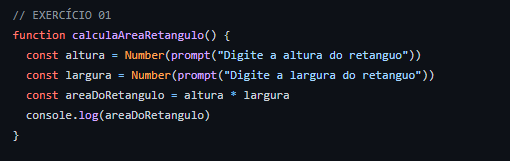
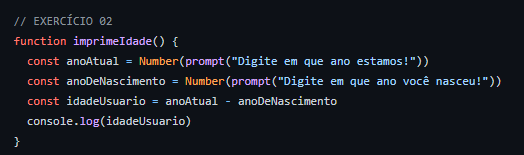
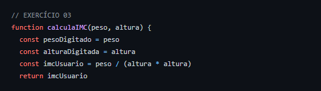
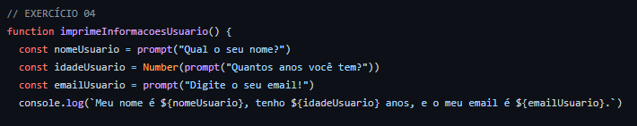
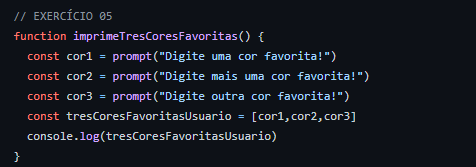
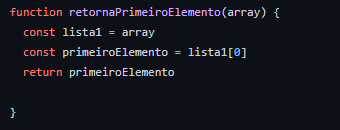
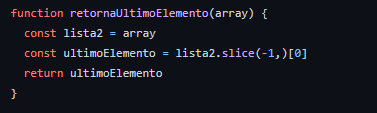

Esses são alguns codigos de exercicios que Resolvi em JS
Projeto Black Jack

Calcula a area de um retangulo

Imprimi a Idade

Calcula IMC

Imprime Informações do usuario no console

Pergunta 3 cores favoritas do usuario e imprime no console

Retorna o primeiro elemento de um array

Retorna o ultimo elemento de um array
